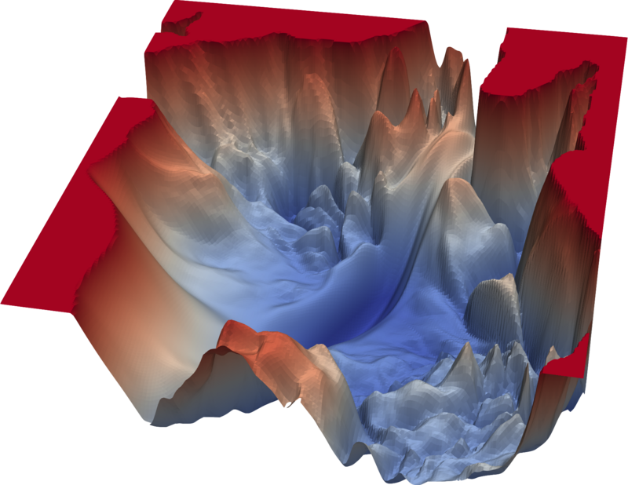
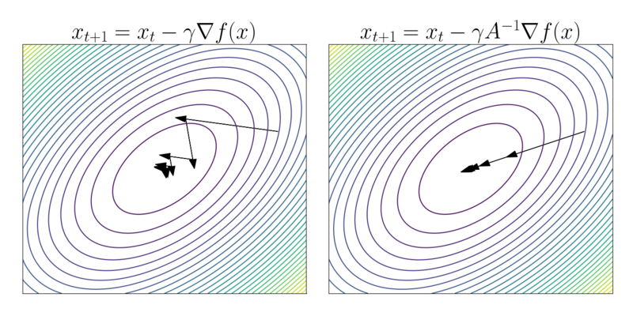

그래디언트가 가리키는 방향이 "가장 가파르게 내려가는 방향"이니 그 방향으로 걸으면 된다. 간단해 보인다.
하지만 여기에 근본적인 문제가 숨어 있다. 같은 확률 모델을 θ 대신 φ=f(θ)로 재매개변수화(reparameterize)하면 경사하강법의 궤적이 완전히 달라진다. 같은 모델, 같은 손실 함수인데 매개변수의 이름표를 바꾸기만 했을 뿐인데도 학습 경로가 바뀐다. 어떤 매개변수화에서는 빠르게 수렴하고, 다른 매개변수화에서는 진동하거나 느리게 수렴한다.
이것은 심각한 문제다. 물리 법칙이 좌표계에 의존하면 안 되듯이, 학습 알고리즘이 매개변수의 이름에 의존해서는 안 된다. 좌표에 의존하지 않는 "진짜 최급강하 방향"이 존재하는가? 존재한다면 어떻게 계산하는가?

이 질문의 답은 이 책 전체를 관통하는 주제, 곧 매개변수 공간을 매니폴드로 보는 관점에서 자연스럽게 나온다.
패턴
보통의 경사하강법에서 "가장 가파른 방향"은 유클리드 내적으로 정의된다. ∥δθ∥2=∑i(δθi)2≤ϵ2 제약 아래 L(θ+δθ)를 가장 많이 줄이는 δθ의 방향이 그래디언트의 반대 방향이다. 하지만 이 유클리드 내적은 매개변수 공간이 평평하고, 모든 방향의 눈금이 같다고 가정한 것이다.
매개변수 공간이 리만 매니폴드라면 "가장 가파른 방향"은 계량에 의존한다. 걸음의 크기를 계량으로 재어 gijδθiδθj≤ϵ2 제약 아래 최적화하면(라그랑주 승수법 한 줄이면 된다) 최급강하 방향은 다음과 같다.
스코어의 평균이 0이므로 이것은 스코어의 공분산이며, "매개변수의 작은 변화가 확률분포를 얼마나 바꾸는가"를 잰다. 11장에서 본 것처럼 KL 발산을 2차까지 전개했을 때 나오는 계수가 바로 이 행렬이다. 피셔 행렬은 재매개변수화에 대해 계량 텐서와 똑같은 규칙으로 변환되므로, 이 계량으로 보정한 그래디언트는 좌표에 의존하지 않는다.

직관적인 비유를 하자면, 유클리드 그래디언트는 "지도 위에서의 가장 가파른 방향"이고 자연 경사는 "실제 지형 위에서의 가장 가파른 방향"이다. 메르카토르 도법으로 그린 지도에서는 극지방이 과도하게 크게 보이므로, 지도 위에서 가장 짧아 보이는 걸음이 실제 지형 위에서도 가장 짧은 걸음은 아니다. 피셔 계량은 이 "지도의 왜곡"을 보정한다.
맨 오른쪽의 J(⋅)은 벡터 δθ가 δφ=Jδθ로 옮겨지는 것과 같은 규칙이다. 곧 자연 경사는 좌표를 바꿔도 같은 기하학적 벡터를 가리킨다. 반면 보통 그래디언트는 J−T로 변환되어 벡터처럼 옮겨지지 않으므로, 좌표를 바꾸면 가리키는 방향 자체가 달라진다. 한 가지 덧붙이면, 불변인 것은 무한히 작은 걸음의 방향(연속적인 흐름)이다. 학습률이 유한하면 좌표마다 2차 크기의 차이가 남는다.
따라 계산해 보기 — 정규분포의 피셔 정보와 두 좌표
평균 2, 분산 1인 데이터에 정규분포 N(μ,σ2)를 맞춘다고 하자. 평균 음의 로그가능도는 상수를 빼면 다음과 같다.
피셔 정보.logp=−logσ−2σ2(x−μ)2+상수이므로 스코어는 ∂μlogp=σ2x−μ, ∂σlogp=−σ1+σ3(x−μ)2이다. 제곱의 기댓값을 내면 F=diag(1/σ2,2/σ2)가 된다. 11장에서 KL을 전개해 얻은 계량과 같다.
출발점 (μ,σ)=(0,0.5)에서. 그래디언트는 ∇L=(−8,−38), 피셔 행렬은 diag(4,8)이므로 자연 경사는 F−1∇L=(−2,−4.75)다.
좌표를 s=logσ로 바꾸면. 같은 점에서 ∂L/∂s=σ∂L/∂σ=−19이고, 피셔 행렬은 Fs=diag(1/σ2,2)=diag(4,2)가 된다. 자연 경사는 (−2,−9.5)다.
두 결과를 맞춰 보면.σ 좌표의 자연 경사 성분 −4.75를 ds=dσ/σ로 옮기면 −4.75/0.5=−9.5로, s 좌표에서 직접 구한 값과 정확히 같다. 보통 그래디언트는 사정이 다르다. σ 좌표에서 한 걸음은 δσ∝38인데, s 좌표에서 한 걸음 δs∝19를 σ로 옮기면 δσ=σδs∝9.5다. 같은 학습률로 네 배나 다른 걸음을 걷는 셈이다.
실용적인 관점에서 자연 경사의 가장 큰 장벽은 계산 비용이다. 매개변수가 n개면 n×n 행렬의 역행렬을 매 단계 구해야 하는데, 현대 신경망에서 n은 수억에 달하므로 이것을 그대로 하기는 불가능하다. 하지만 자연 경사의 정신은 여러 실용적 알고리즘에 살아 있다. K-FAC은 피셔 행렬을 층마다 크로네커 곱으로 근사하고, Adam은 기울기 제곱의 이동평균(경험적 피셔 행렬의 대각 성분에 해당)의 제곱근으로 나눈다는 점에서 대각 근사의 먼 친척으로 볼 수 있다. 강화학습의 TRPO(Trust Region Policy Optimization)는 정책 공간에서의 자연 경사를 KL 발산 제약(신뢰 영역)과 결합한 것이며, PPO는 TRPO의 실용적 근사다. 이들 모두 "매개변수 공간의 기하학을 존중하라"는 아마리의 통찰에서 뻗어 나온 가지들이다.
정의
자연 경사 (좌표 독립 경사 / Coordinate-Free Gradient, ∇~L=F−1∇L) — 매개변수 공간을 피셔 계량을 가진 리만 매니폴드로 보았을 때의 “진정한” 최급강하 방향. 유클리드 그래디언트에 피셔 행렬의 역행렬을 곱한 것이다. F=I이면 보통 그래디언트와 같지만, 매개변수 공간이 휘어져 있거나 눈금이 방향마다 다르면 방향이 크게 달라질 수 있다. 자연 경사의 핵심 성질은 재매개변수화 불변성이며, 이는 매니폴드 위의 벡터가 좌표에 의존하지 않는 것과 같은 원리다.
피셔 정보행렬 (확률적 눈금 / Probabilistic Ruler, Fij=E[∂θi∂logp∂θj∂logp]) — 로그가능도의 기울기(스코어)의 공분산 행렬. 매개변수 θ의 작은 변화가 확률분포를 얼마나 바꾸는지를 잰다. 피셔 행렬은 KL 발산의 헤시안과 같으며 — Fij=∂θi∂θj∂2DKL(pθ∥pθ0)θ=θ0 — 이 사실이 피셔 행렬을 통계적 매니폴드의 리만 계량으로 만드는 근거다.
미분동형사상 (매끄러움을 보존하는 변환 / Smooth Relabeling) — 매니폴드 M에서 매니폴드 N으로의 부드러운 전단사 함수 f:M→N으로, 역함수 f−1도 부드러운 것. 길이나 모양이 아니라 "매끄러운 구조"를 보존하는 변환이며, 좌표를 통째로 다시 붙이는 일로 생각하면 된다. 재매개변수화 φ=f(θ)는 매개변수 공간에서의 미분동형사상이며, 자연 경사가 불변인 것은 계량처럼 기하학적으로 정의된 양이 이 변환을 따라 함께 옮겨지기 때문이다.
푸시포워드 (밀어내기 / Push-Forward, f∗) — 미분동형사상 f:M→N이 접선벡터를 M의 접선공간에서 N의 접선공간으로 “밀어내는” 연산. 점 p에서의 속도벡터 v는 f(p)에서의 속도벡터 f∗v로 변환된다. 좌표로 쓰면 야코비안 행렬을 곱하는 것이고, 위 변환 법칙의 맨 오른쪽 J(⋅)이 바로 이것이다. 텐서를 한 좌표계에서 다른 좌표계로 옮기는 것도, Normalizing Flow에서 단순한 분포를 복잡한 분포로 변환하는 것도 모두 푸시포워드의 사례다.
핵심 인물과 일화
아마리 순이치 (甘利俊一, 1936–) — 자연 경사의 발견 (1998)
1990년대 후반, 신경망 연구는 침체기에 있었다. 딥러닝 혁명은 아직 15년 가까이 남아 있었고, 대부분의 연구자는 SVM이나 커널 방법에 주목하고 있었다. 이 시기에 아마리 순이치는 신경망 학습의 근본적인 문제에 도전한다.
문제는 이것이었다: 보통의 경사하강법(gradient descent)은 θ→θ−η∇L(θ)로 매개변수를 갱신하는데, 이 갱신 방향은 좌표계에 의존한다. 같은 확률 모델을 θ 대신 φ=f(θ)로 재매개변수화하면 경사하강법은 완전히 다른 경로를 따른다. 어떤 매개변수화가 “올바른” 것인가?
아마리의 답은 명쾌했다: 올바른 매개변수화는 없다. 매개변수화에 의존하지 않는 갱신 규칙을 써야 한다. 1998년 논문 "Natural Gradient Works Efficiently in Learning"에서 그는 앞에서 본 자연 경사 ∇~L=F−1∇L을 제시한다. 이것은 단순히 그래디언트에 행렬을 곱한 것이 아니다. 매개변수 공간을 리만 매니폴드로 보고, 피셔 계량에 대한 "진정한 최급강하 방향"을 구한 것이다.
유클리드 공간에서는 F=I(단위행렬)이므로 자연 경사와 보통 경사가 같다. 하지만 확률 모델의 매개변수 공간처럼 눈금이 장소와 방향마다 다르면 두 방향은 크게 다를 수 있다. 자연 경사는 좌표에 속지 않고, 확률분포 공간의 진정한 기하학을 따라 내려간다.
이 아이디어는 당시에는 계산 비용 때문에 실용적이지 못했다. n개의 매개변수에 대해 n×n 행렬의 역행렬을 매 단계 구해야 했으니까. 하지만 아마리의 통찰은 앞에서 본 K-FAC, TRPO/PPO 같은 이후의 최적화 알고리즘에 깊은 영향을 남겼다.
수리공학자로서 신경망의 수학적 이론과 확률분포의 기하학을 수십 년에 걸쳐 함께 연구하다가, 그 둘이 만나는 자리에서 학습 알고리즘을 바꿔 놓은 아마리의 여정은 이 책 전체의 주제 — 미분기하학의 언어가 어떻게 다른 세계와 연결되는가 — 를 한 사람의 경력 안에서 보여 준다.
직접 움직여 보기
따라 계산해 보기의 정규분포 맞추기 문제를 두 좌표로 나란히 그렸다. 왼쪽은 (μ,σ), 오른쪽은 (μ,logσ) 좌표이고, 배경 등고선은 같은 손실 L이다. 한쪽 평면을 눌러 출발점을 고르면 세 가지 길이 양쪽에 함께 그려진다. 보통 경사하강을 σ 좌표에서 한 길과 logσ 좌표에서 한 길은 서로 다르지만, 자연 경사의 길은 어느 좌표로 계산해도 하나로 겹치는지 확인해 보자.
연습문제와 같이 풀기
각 문제를 먼저 혼자 풀어 본 뒤, 바로 아래 세션에서 선생님과 두 학생이 어떻게 풀어 가는지 따라가 보자.
문제 1 — 정보가 많은 방향에서는 크게 걸을까, 작게 걸을까
확인 매개변수가 하나인 모델에서 자연 경사의 한 걸음은 δθ=−ηF−1dθdL이다. 같은 기울기 dθdL에서 피셔 정보 F가 큰 곳과 작은 곳 중 어디서 걸음이 더 큰가? 그 이유를 "분포가 얼마나 바뀌는가"로 설명하라.
같이 풀기 세션 1
김민준F가 크면 걸음도 커야 하지 않아요? 정보가 많다는 건 방향에 대한 확신이 크다는 거니까, 믿고 성큼성큼 가도 될 것 같은데요.
선생님식을 다시 볼까요? F는 분모에 있어요, 분자에 있어요?
김민준역행렬이니까 분모요. 그러면 F가 클수록 걸음이 작아지네요. 근데 직관은 왜 반대로 가죠?
이서연피셔 정보가 크다는 건 θ를 조금만 바꿔도 분포가 크게 바뀐다는 뜻이잖아. 같은 δθ라도 분포 공간에서는 먼 거리야.
선생님맞아요. 자연 경사는 매개변수 공간이 아니라 분포 공간에서 일정한 거리만큼 걷자는 규칙이에요. 눈금이 촘촘한 곳에서는 좌표로 조금만 움직여도 이미 많이 간 거예요.
김민준아, 과제에서 하이퍼파라미터 튜닝할 때 조교가 "민감한 건 조금씩, 둔한 건 크게 바꿔 보세요"라고 했던 게 이거네요. 조금만 건드려도 결과가 확 바뀌는 게 피셔 정보가 큰 방향이고요.
문제 2 — 로그 표준편차 좌표의 피셔 정보
계산 정규분포 N(μ,σ2)의 피셔 행렬은 (μ,σ) 좌표에서 diag(1/σ2,2/σ2)이다. 좌표를 (μ,s), s=logσ로 바꿨을 때의 피셔 행렬을 변환 법칙으로 구하고, 스코어를 직접 계산해서 확인하라.
같이 풀기 세션 2
김민준좌표를 바꾸면 야코비안을 곱하면 되죠. ds/dσ=1/σ니까 σ 성분에 한 번 곱해서… σ22⋅σ=σ2. 아니, 역수니까 σ를 곱하는 게 맞나?
이서연계량은 한 번이 아니라 두 번 곱해야 해. 인덱스가 두 개니까. 나는 J=dσ/ds=σ로 놓고 Fs=J−TFσJ−1에 넣었어. 그러면 σ1⋅σ22⋅σ1=σ42.
선생님두 사람 답이 2/σ와 2/σ4로 갈렸네요. 서연 학생, 검산할 방법이 있을까요?
이서연스코어를 직접 구하면 돼요. logp=−s−2e2s(x−μ)2이니까 ∂slogp=−1+σ2(x−μ)2. σ2(x−μ)2는 자유도 1인 카이제곱이라 분산이 2고요. 그러면 Fss=2, σ와 상관없는 상수예요. 둘 다 틀렸네.
선생님변환 법칙에서 J를 어느 쪽 미분으로 잡았는지 다시 보세요. 이 장에서는 J=∂(새좌표)/∂(옛좌표), 옛 좌표 쪽이 Fθ=JTFφJ였죠.
이서연새 좌표가 s, 옛 좌표가 σ니까 J=ds/dσ=1/σ. 그러면 Fs=J−TFσJ−1=σ⋅σ22⋅σ=2. 제가 J를 거꾸로 잡았었네요.
김민준저는 J를 한 번만 곱했고요. 벡터는 한 번, 계량은 두 번. 좌표를 바꿀 때 계량의 두 인덱스 각각에 야코비안이 하나씩 붙는 거네요.
김민준조교님이 텐서 연산 과제 채점하면서 "einsum 인덱스 개수부터 세세요"라고 적어 주셨던 게 생각나요. 인덱스가 두 개면 변환도 두 번이죠.
선생님그리고 Fss=2가 상수라는 게 재미있죠. logσ 좌표에서는 분산 방향의 눈금이 어디서나 같아요. 그래서 실제로 표준편차를 log로 매개변수화하면 학습이 편해지는 경우가 많아요.
문제 3 — 학습률만 키우면 같을까
킬러 어떤 점에서 피셔 행렬이 F=(2111)이고 그래디언트가 ∇L=(1,0)이다. 자연 경사 F−1∇L을 구하고, 보통 그래디언트와 방향이 어떻게 다른지 설명하라. 방향이 달라도 여전히 손실이 줄어드는 방향인 이유는 무엇인가?
같이 풀기 세션 3
김민준PyTorch로 작은 모델에 자연 경사를 돌려 봤는데요, 보통 SGD랑 궤적이 거의 비슷하고 빠르기만 하더라고요. 결국 자연 경사는 학습률을 방향마다 조금씩 키운 거 아니에요? 학습률만 잘 고르면 같을 것 같아요.
이서연이 문제는 계산이 금방이야. 피셔 행렬 대각이 2랑 1이니까 역행렬은 diag(1/2,1), 그러면 F−1∇L=(1/2,0). 방향은 그래디언트랑 똑같고 길이만 반이네. 민준이 말이 맞는 것 같은데?
선생님서연 학생, 역행렬을 구할 때 비대각 성분 1은 어디로 갔어요?
이서연아… 대각 성분만 뒤집었어요. 대각행렬일 때만 되는 계산인데. 제대로 하면 행렬식이 2−1=1이니까 F−1=(1−1−12), F−1∇L=(1,−1). 그래디언트는 x축 방향인데 자연 경사는 45도 기울어졌어요.
김민준방향이 바뀌네요. 그럼 제 PyTorch 실험은 뭐였죠?
선생님그 모델의 피셔 행렬이 대각에 가까웠을 거예요. 매개변수들이 서로 얽혀 있지 않으면 자연 경사는 정말로 "방향마다 다른 학습률"이 돼요. Adam이 대각 근사의 친척인 것도 그래서고요. 하지만 비대각 성분이 있으면, 한 매개변수를 움직일 때 다른 매개변수도 같이 보정해야 분포 공간에서 똑바로 가요. 이건 성분별 학습률로는 흉내 낼 수 없어요.
김민준그럼 45도나 틀어졌는데도 손실이 줄어드는 게 보장돼요? 그래디언트 반대 방향이 가장 가파른 방향이라면서요.
이서연내적을 보면 돼. 손실의 1차 변화는 ∇L⋅δθ=−η∇LTF−1∇L이고, F가 양의 정부호면 F−1도 양의 정부호라서 이 값은 항상 음수야. 여기서는 (1,0)⋅(1,−1)=1>0이니까 반대로 걸으면 줄어들고. 가장 가파른 방향은 "어떤 자로 재느냐"에 따라 달라질 뿐이야.
선생님정확해요. 그래디언트 반대 방향은 유클리드 자로 잰 가장 가파른 방향이고, 자연 경사는 피셔 자로 잰 가장 가파른 방향이에요. 둘 다 내려가는 방향이지만, 좌표를 바꿔도 살아남는 건 뒤쪽뿐이죠.
김민준조별 과제에서 두 명이 같은 함수를 고치고 있으면, 한 명이 고칠 때 다른 명 코드도 같이 맞춰 줘야 머지가 되잖아요. 비대각 성분이 딱 그 "같이 맞춰 주기"네요.
이서연선형대수 시험에서도 "대각행렬이면"이라는 조건 없이 역행렬을 성분별로 뒤집었다가 감점당한 적이 있어요. 조건부터 확인하는 버릇을 들였는데도 또 놓쳤네요.